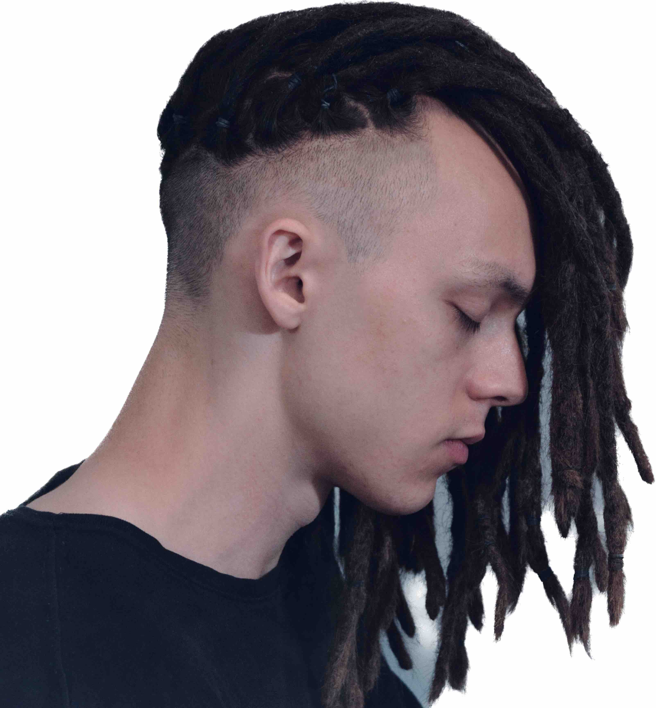
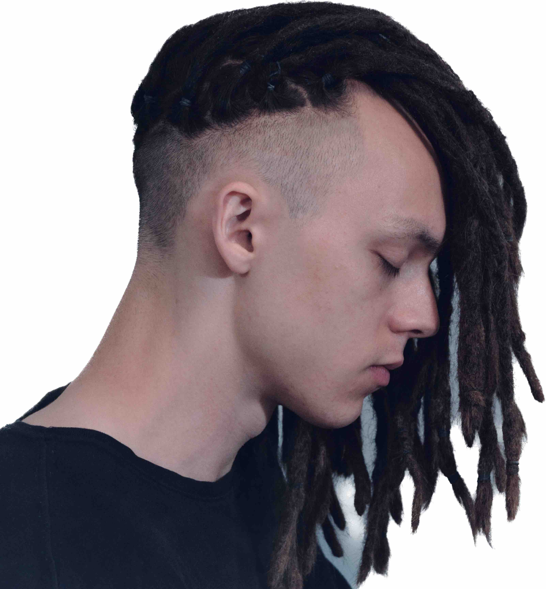

嗨，我叫智海！我是加拿大的作曲家、多樂器演奏家和受過古典音樂和爵士訓練的音樂人，有著粵籍和蘇格蘭血統...

嗨，我叫智海！我是加拿大的作曲家、多樂器演奏家和受過古典音樂和爵士訓練的音樂人，有著粵籍和蘇格蘭血統...
我的音樂之旅始於五歲，從嚴格的古典鋼琴訓練開始，在皇家音樂學院培養了對技巧和音樂感的敏銳觸覺。然而，在叛逆的青少年時期，我對古典音樂世界的不耐煩讓我偶然間發現了即興爵士音樂的世界，因此我成為了一個音樂學院的退學生，渴望探索新的音樂形式。
接下來的幾年成為了一場多元文化的音樂之旅：從學習日本融合爵士鋼琴到突然間學起指弹和佛拉明哥吉他；然後從學習中國傳統二胡到製作嘻哈節拍和掌握數位音頻製作；換句話說，我開始成為一個多語言的音樂家。
至於作曲，我的旅程始於溫哥華的不列顛哥倫比亞大學。我最初報讀的是計算機科學專業，但在加入遊戲開發俱樂部後，我立刻轉變為全日制音樂專業，因為我發現了為互動媒體配樂的樂趣。最終，我在萊斯布里奇大學安頓下來，這是一所謙遜的學校，讓我有自由租借並學習管弦樂團中的每一種樂器，從而加深了我對多樂器演奏的熱愛。
在學習期間，我繼續為獲獎的學生遊戲和動畫配樂，同時在Dr. Arlan N. Schultz的指導下接受音樂會音樂的訓練。
在每天40小時的音樂練習之餘，我喜歡攀爬岩石，做體操，還有編程機器來為我所用。
(^-^)